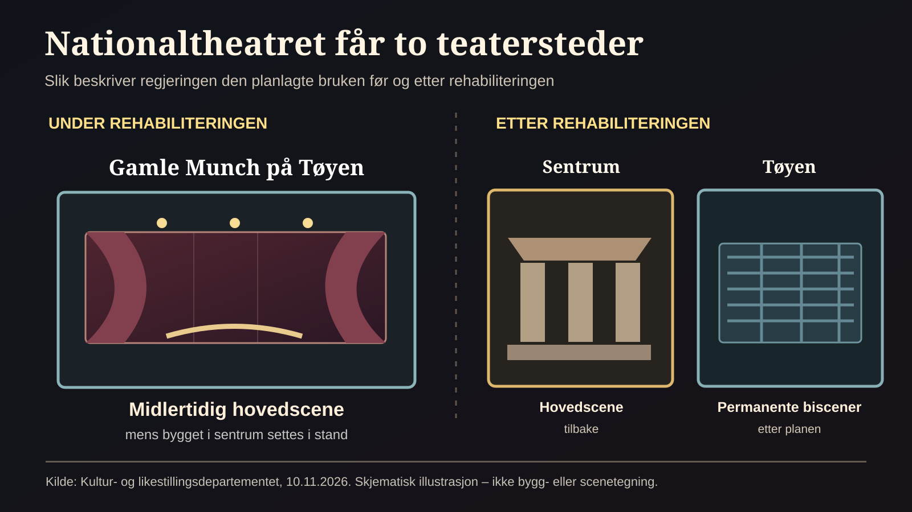

Tirsdag 10. november kunngjorde kulturminister Lubna Jaffery regjeringens plan for Nationaltheatret. Svaret på hvor teatret skal holde til under oppussingen, er det tidligere Munchmuseet på Tøyen. Når den historiske teaterbygningen i sentrum er ferdig rehabilitert, skal hovedscenen vende tilbake. Biscenene skal etter planen bli værende på Tøyen. [1][2]
Kilde: Kultur- og likestillingsdepartementet, 10. november 2026.
Løsningen betyr at den gamle bygningen ved Johanne Dybwads plass skal bevares og settes i stand, samtidig som Gamle Munch får en ny og langsiktig rolle i Oslos kulturliv.
Et bygg som trenger omfattende arbeid
Nationaltheatrets historiske bygning har i mange år vært preget av vedlikeholdsproblemer og behov for rehabilitering. I 2025 gikk regjeringen inn for en løsning med oppussing av hovedbygningen og egne scenefasiliteter som kunne fungere under byggeperioden og deretter bli permanente biscener. [3]
Kilde: Regjeringens vedtak om hovedløsning, 4. juli 2025.
Det har likevel vært uenighet om hva som skulle bygges, hvor biscenene skulle ligge, hvordan kostnadene skulle holdes under kontroll og hvor raskt en løsning kunne gjennomføres.
Regjeringen har også presisert at hovedscenen ikke skal flyttes permanent; bygget i sentrum skal rehabiliteres. [11]
Dagens kunngjøring svarer på et av de viktigste spørsmålene: Det gamle Munchmuseet blir teatrets midlertidige hovedbase. Ifølge regjeringen vurderte Statsbygg 14 tomtetilbud før valget falt på Tøyen, og neste prosjektmilepæl er oppstart av forprosjekt i 2027. Det er ikke det samme som en fastsatt dato for ferdig rehabilitering. [7]
Kilde: Regjeringen om tomtesøket og forprosjekt i 2027.
Hva er en biscene, og hva er fortsatt uavklart?
En biscene supplerer teatrets hovedscene og kan huse produksjoner med andre romlige behov.
Planlagt: Midlertidig hovedscene på Tøyen under rehabiliteringen. Senere permanente biscener der og hovedscene tilbake i sentrum.
Uavklart per 11. november: Endelig teknisk utforming, innflyttingsdato, ombyggingskostnad og hvordan dagens lokale kulturaktører kan bruke bygget.
Kilde: Regjeringens pressemelding 10. november 2026. Opplysningene er ikke en fullstendig byggeplan.
Tidslinje: Fra historisk scene til ny plan
Trykk på en milepæl for å se hva som er skjedd – og hva som fortsatt bare er planlagt.
Nationaltheatret åpner i sentrum
Bygningen åpnet som sentral arena for norsk scenekunst. Kulturministerens historiske omtale 2026.
Regjeringen velger en hovedløsning
Rehabilitering av hovedbygningen og egne scener for driften i byggeperioden og senere. Regjeringens pressemelding 2025.
Gamle Munch velges etter tomtesøk
Statsbygg vurderte 14 tomtetilbud før Gamle Munch ble valgt. Teateret er ikke ferdig flyttet. Regjeringens pressemelding 2026.
Oppstart av forprosjekt
Neste varslede fase er forprosjekt, som skal utrede hvordan løsningen blir. Det er ikke en fastsatt åpningsdato. Regjeringens informasjon om prosjektet.
Hva blir permanent på Tøyen?
Mens arbeidet i sentrum pågår, skal teaterdriften flyttes til Gamle Munch. Etter rehabiliteringen vil hovedscenen vende tilbake til Nationaltheatrets opprinnelige bygning, mens biscenene etter regjeringens plan fortsetter på Tøyen. [2]
Kilde: Regjeringens plan for midlertidig hovedscene og varige biscener.


Hva skal skje hvor?
Utforsk to faser. Dette er regjeringens plan, ikke en ferdig fastsatt bygge- og premieredato.
Kilde: Kultur- og likestillingsdepartementet, 10. november 2026.
Dermed endres byens teatergeografi. Tøyen får ikke bare besøk av en stor kulturinstitusjon i en byggeperiode; området kan få en varig sceneaktivitet med publikum, kunstnere og ansatte.
Oslos byrådsleder Eirik Lae Solberg (H) hilser beslutningen velkommen, og mener den bidrar til at Gamle Munch blir brukt og ivaretatt. Dette er byrådslederens vurdering; hvordan dagens lokale aktører blir ivaretatt, er et eget spørsmål. [7]
Men en ny adresse garanterer ikke alene et lokalt kulturløft. Det vil avhenge av åpne publikumsarealer, tilgjengelighet, program, samarbeid med lokale miljøer, transport og hvordan teateret bruker huset.
Flere alternativer har vært diskutert
I tidligere faser er blant annet nye biscener ved Tullinløkka blitt vurdert. Gruppen «Ny framtid for Nationaltheatret» har fremmet en annen idé, knyttet til en ny bygning i tilknytning til dagens teater. Stortingets familie- og kulturkomité behandlet nylig et forslag om å utrede dette alternativet grundigere. En innstilling fra komiteen var lagt fram før regjeringens nye kunngjøring, og Stortinget har varslet behandling torsdag 12. november. [4][5]
Kilde: Stortinget – Innst. 24 S (2026–2027).
Det er derfor misvisende å framstille diskusjonen som om alle aktører har vært enige om én opplagt løsning. Samtidig har skuespillere ved Nationaltheatret selv offentlig argumentert for å ta Gamle Munch i bruk og legge til rette for permanente biscener der. [6]
Kjøpesummen er ikke rehabiliteringsbudsjettet
Kulturavisen Subjekt skriver at staten skal betale 111 millioner kroner for Gamle Munch, med Aftenposten oppgitt som kilde. Dette er et rapportert kjøpesumsbeløp, ikke et totalbudsjett for teaterets ombygging eller restaureringen av Nationaltheatrets gamle hovedbygning. Paradisavisa har ikke selv fått bekreftet kjøpesummen direkte i avtaledokumentene. [10]
Kilde: Subjekt, 10. november, med Aftenposten som oppgitt bakgrunn. Kjøpsavtalen er ikke kontrollert.
Regjeringen har fastsatt forprosjektstart i 2027, men heller ikke dagens pressemelding oppgir en ferdigstillelsesdato eller samlet sluttkostnad. Det er derfor nødvendig å skille mellom eiendomskjøp, tilpasning av Gamle Munch og rehabilitering i sentrum. [7]
Tøyens egne kulturmiljøer må også høres
Etter at Munchmuseet flyttet ut, ble Gamle Munch brukt til kultur- og nærmiljøaktiviteter. Rødt-politikeren Siavash Mobasheri kritiserte i mars 2026 planene om at Nationaltheatret kunne overta bygget, fordi lokale kulturmiljøer og ideelle organisasjoner kunne miste et viktig samlingssted. Dette var en uttalelse fra mars, ikke en reaksjon på regjeringens beslutning 10. november. [8]
Kilde: Kunstavisen/NTB, mars 2026 – uttalelser før regjeringens beslutning.
Regjeringen legger vekt på at bygget skal ha publikumsrettet kulturaktivitet, men har foreløpig ikke klargjort hvordan lokale aktører skal få tilgang. Det bør undersøkes med teateret, kommunen og kulturmiljøene på Tøyen. [7] [9]
Hvem får et bedre teater – og når?
For publikum kan en midlertidig flytting gi nye opplevelser, men også praktiske endringer. For ansatte og kunstnere blir det viktig hvordan de nye lokalene kan brukes til prøver, verksteder, drift og forestillinger. For byen kan et nytt kultursted på Tøyen styrke publikumsstrømmer også utenfor sentrum.
Det sentrale åpne spørsmålet er fremdeles tid og kostnad: Når kan teateret flytte inn, hvor lenge blir hovedscenen stengt, hva vil ombyggingen koste, og hvilke deler av planene krever ytterligere avtaler eller bevilgninger? Disse punktene må undersøkes i prosjektunderlag og gjennom direkte spørsmål til staten, Oslo kommune og teateret før en komplett økonomisak kan publiseres.
Beslutningen setter likevel en tydelig retning: Nationaltheatret skal ikke forlate sentrum for godt, men Oslo kan få to varige teatersteder i stedet for ett.
Kilder
- Kultur- og likestillingsdepartementet, «Presseinvitasjon: … om Nationaltheatret», 10. november 2026; pressekonferanse kl. 15.
- NTB/Dagsavisen, «Nationaltheatret flytter til Tøyen», publisert 10. november 2026 kl. 15.10, oppdatert kl. 15.33.
- Kultur- og likestillingsdepartementet, «Regjeringen har valgt løsning for Nationaltheatret», 4. juli 2025.
- Stortinget, Innst. 24 S (2026–2027) om alternativet «Ny framtid for Nationaltheatret».
- Stortinget, «Uke 46 på Stortinget», omtaler planlagt behandling torsdag 12. november.
- VG, «Skuespillerne på kant med sin tidligere sjef», 19. oktober 2026, om støtte til Gamle Munch.
- Kultur- og likestillingsdepartementet, «Regjeringa vil bruke Gamle Munch på Tøyen som teaterhus med biscener for Nationaltheatret», 10. november 2026.
- Kunstavisen/NTB, 17.–18. mars 2026: Gamle Munch og kulturmiljøene
- VårtOslo, 5. desember 2025: Gamle Munch som nærmiljøhus
- Subjekt, 10. november: Rapportert kjøpesum for Gamle Munch, med Aftenposten som oppgitt kilde
- Kulturministerens tale 10. november 2026: Hovedscenen forblir i sentrum